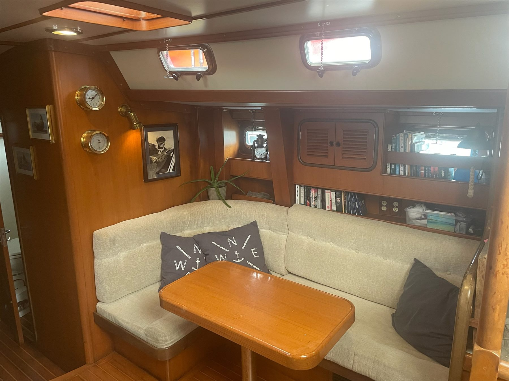
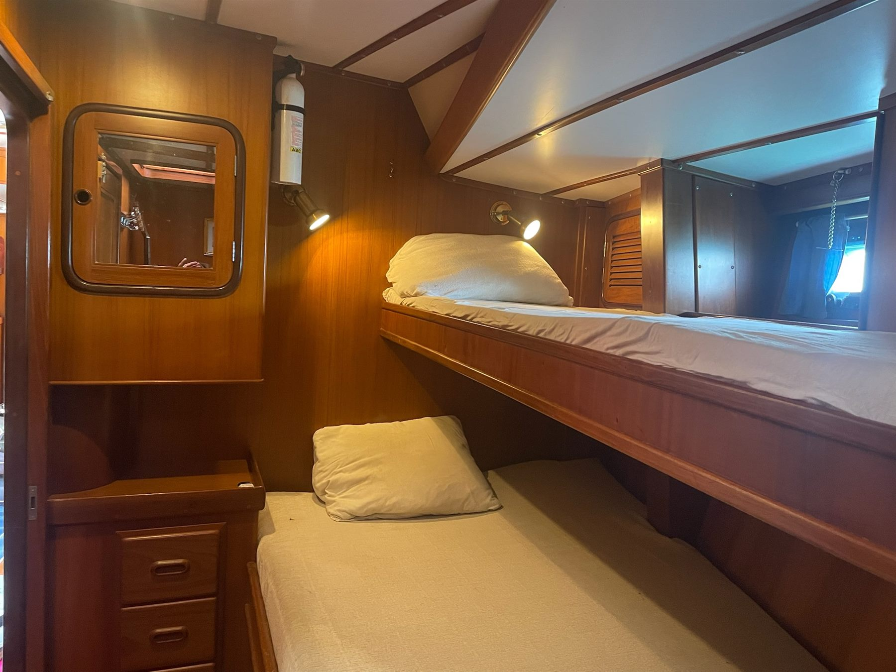

The yacht
Lady Athena is a Tayana 58, an ocean cruiser designed by Pieter Beeldsnijder for long passages. This is where you sleep, eat and sail for two weeks.

At a glance
| Model | Tayana 58 |
|---|---|
| Designer | Pieter Beeldsnijder |
| Guests | 5 at most |
| Guest cabins | Port cabin with 3 berths, starboard cabin with 2 berths |
| Bathrooms | A guest toilet and shower, and a separate one for the crew |
| Engine | Yanmar, 140 hp |
| Fresh water | Watermaker, 200 litres an hour |
| Internet | Starlink |
Below deck
A light saloon, a full galley and cabins with standing headroom and thick mattresses.



Equipment
Sailing and navigation
- Full-batten mainsail and two furling headsails
- Radar, echo sounder and wind instruments
- Simrad 16-inch chartplotter and autopilot
- VHF and SSB radio
- 14.5 hp bow thruster
- Electric anchor winch with 90 metres of chain
Safety
- Life raft for 8 people
- Life jackets for everyone on board
- Fire extinguishers
- EPIRB emergency beacon
- Safety briefing for all new crew on day one
Galley and comfort
- Gas stove with oven, and a microwave
- Two fridges and two freezers
- Watermaker and a 5.5 kW generator
- Music system and a cinema screen
- Starlink internet
Tenders and toys
- 3.3 m Selva RIB with a 40 hp Yamaha outboard
- A small tender with a 6 hp outboard for landing on beaches
- Two kayaks and two mountain bikes
- Snorkelling gear and fishing rods
- Swim ladder and stern shower